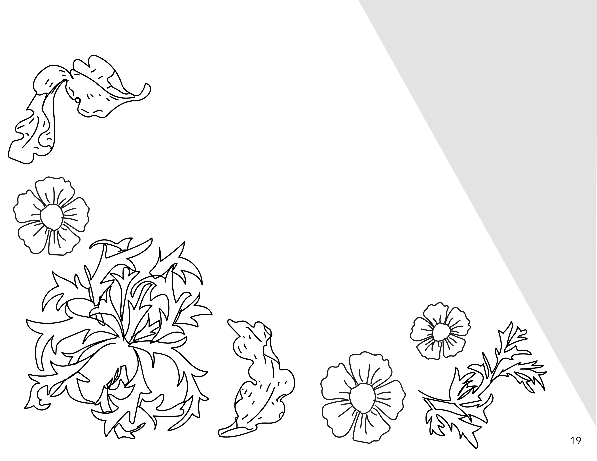

Hazey Highlights
the best of design

DSGN 266: Graphic Design with Creative Technologies
taught by Mark Owens | Spring 2020
The premise of this class was ...
Poster
Motion Piece
Publication
Website
Final Presentation
FNAR 264: Art, Design, and Digital Culture
taught by David Comberg | Fall 2019
The purpose of this class was to introduce students to the Creative Suite and to help students begin to develop their own design style and process.
Project 1
Project 2: Animation
Project 3: Product Design
Project 4: Public Intervention
For this project, we ...
Final Portfolio